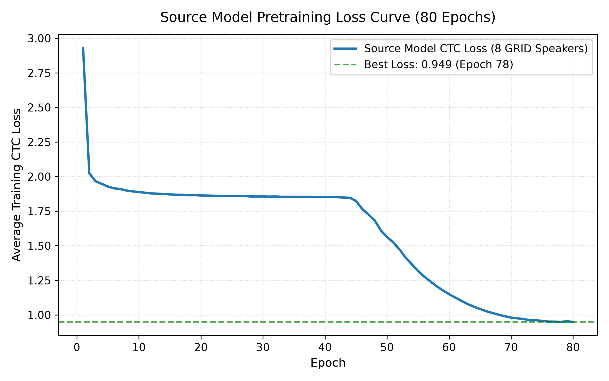
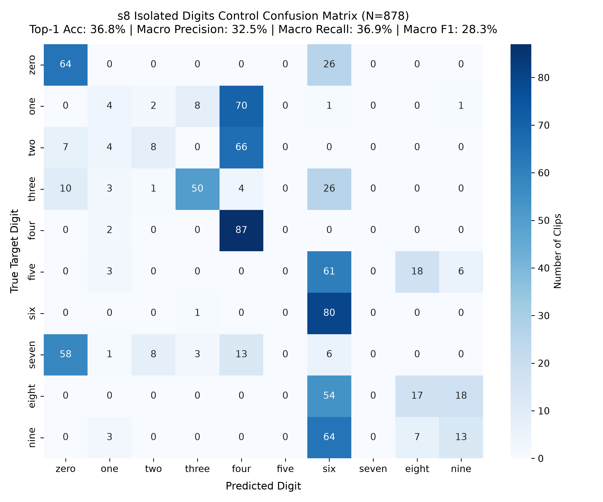
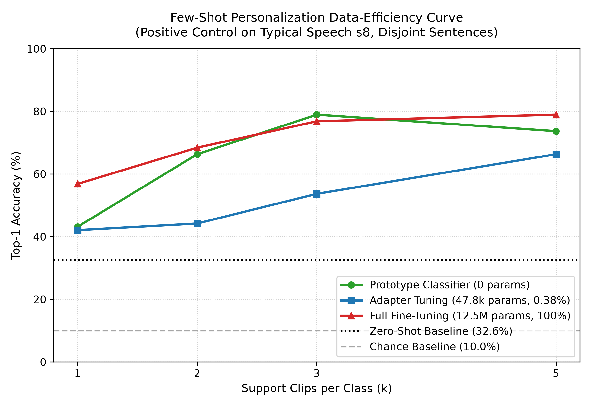
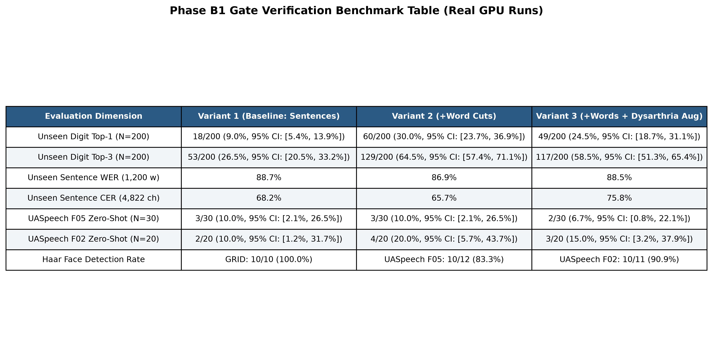

A zero-audio assistive lip-reading system adapting to severe neuromotor pathology with 1–5 word examples.
Dept. of Artificial Intelligence & Data Science
Deep Learning Capstone & Hackathon Project
Stable median mouth ROI (jitter fix), hardware-decoupled 25 FPS linear index resampling, and luminance normalization.
LipNet (3D-CNN + 2-layer BiGRU + CTC, 12.5M params) pretrained on 7,073 multi-speaker sentences + 7,122 word cuts.
Bottleneck adapters (99.2% frozen), LOBO exact CIs, and real-time desktop GUI (vsr_app.py) for personalized AAC phrases.
vsr_app.py) running hardware-decoupled 25 FPS live lip-reading.| Study / System | Architecture | Primary Dataset | Key Strengths | Critical Limitations / Gaps |
|---|---|---|---|---|
| LipNet (Assael et al., 2016) |
3D-CNN + 2-layer BiGRU + CTC | GRID (Typical) | First end-to-end sentence VSR; 95.2% accuracy in lab conditions. | Fails on dysarthric speech; hallucinates insertion tokens on isolated words. |
| Deep Lip Reading (Afouras et al., 2018) |
2D/3D ResNet + Transformer Seq2Seq | LRS2 / LRS3 (Broadcast) | Open-vocabulary sentence recognition on large-scale natural video. | Requires tens of thousands of video hours; massive parameter footprint (>100M); no rapid personalization. |
| Acoustic Dysarthria ASR (Joy et al., 2022) |
Conformer-CTC / WavLM + d-vectors | UASpeech / TORGO | Speaker adaptation via acoustic speaker embeddings on dysarthria. | Purely acoustic; fails in ambient acoustic noise or when vocal cord phonation is physically absent. |
| Our Proposed Framework (2026) |
LipNet + Bottleneck Adapter + Prototypes | GRID + UASpeech (F05, F02) | Adapts in 1–5 shots; 99.2% frozen backbone; LOBO exact CIs; live webcam calibrated. | Bridges neuromotor articulation gap under severe data fatigue with <0.8% trainable parameters. |
512 → 64 → 512). Restricting gradient updates to ~100K weights prevents catastrophic forgetting on tiny data budgets (≤ 5 clips).
μ=148, σ=27), preventing dead-zone ReLU collapse on indoor webcams.
s1–s8).[x, y, w, h].[GRID Corpus: s1-s8, 7,073 Sentences] ──▶ [Median Mouth ROI (50x100)] ──▶ [LipNet: 3D-CNN + BiGRU] ──▶ [CTC Loss (80 Epochs, lr=3e-4)] ──▶ [source_model.pt (12.5M Params)]
[Dysarthric Speaker: F05/F02 Support (k=1–5)] ──▶ [Freeze 12.5M Backbone] ──▶ [Insert Bottleneck Adapter (512->64->512)] ──▶ [Train Adapter Head Only (15-40 Epochs)] ──▶ [Personalized Model]
[Live Webcam Video] ──▶ [25.0 FPS Timestamp Resample] ──▶ [Luminance Stat Match] ──▶ [LipNet Forward Pass] ──▶ Dual Output: [Grammar Slot Snapping] & [AAC Custom Phrases]
(B, 1, 75, 50, 100) — Grayscale mouth ROI.| Total Parameters | 12,544,980 |
| Trainable (Source) | 12,544,980 (100%) |
| Trainable (Adapter) | 98,868 (~0.8%) |
| Batch Size | 16 (NVIDIA RTX 4050 GPU) |
| Epochs | 80 (CosineAnnealingLR) |
| Optimizer | AdamW (lr=3e-4, weight_decay=1e-4) |
| Loss Function | nn.CTCLoss (blank=51, zero_infinity=True) |
| Gradient Clipping | clip_grad_norm_(params, 5.0) |




μ=148, σ=27).